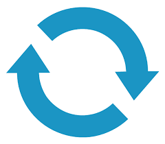

Trace Details
Trace Duration
{{traceInformation.TraceDuration | number:2 }} seconds
Number of Processors
{{traceInformation.NumberOfProcessors}}
Instance Name
{{traceInformation.InstanceName}}
Successful Requests
{{traceInformation.SuccessfulRequests}}
Failed Requests
{{traceInformation.FailedRequests}}
Incomplete Requests
{{traceInformation.IncompleteRequests}}
Total Requests
{{traceInformation.TotalRequests}}
RPS (Requests/Sec)
{{traceInformation.TotalRequests / traceInformation.TraceDuration | number:2}}
Average Response Time
{{traceInformation.AverageResponseTime | number:2}} ms
50th Percentile
{{traceInformation.FiftyPercentile}} ms
90th Percentile
{{traceInformation.NinetyPercentile}} ms
95th Percentile
{{traceInformation.NinetyFifthPercentile}} ms
Avg CPU % (Instance)
{{(traceInformation.CPUMetricPerInterval)* 100 | number:2}} %
CPU % (this Process)
{{(traceInformation.CPUTimeByThisProcess /traceInformation.CPUTimeTotalMetrics) * traceInformation.CPUMetricPerInterval * 100 | number:2}} %
Trace File
None of the requests in this trace took more than 500 milliseconds to execute
Request Execution Breakup - Top 100 Slowest Request
This is a breakdown of the slowest IIS pipeline event (handler, module etc.) for top 100 slowest requests captured in this trace. Requests finishing in less than 500 milliseconds are excluded. Based on the type of the module where the time is spent, the overall execution time is classified as Application Code, Platform or Network. Hover on each of the tiles to know more about what they represent. If a lot of time is spent in the Application Code, then drill down further in the table for the Top 100 Slowest Requests below to see the callstacks or details of where the delay is happening.
Top 100 Slowest Requests in the Trace
The below table lists the top 100 slowest requests captured in this trace. Requests finishing in less than 500 milliseconds are excluded. Click on the Details button to view the stack-trace in the application code or more information about the module where the request is stuck.
Search request
| Method | Request Path | Duration | Type | Slowest Pipeline Event | Time Spent in Slowest Event | Details |
|---|---|---|---|---|---|---|
| {{ (request.Method )}} | {{ (request.requestPath|extractUrl )}} | {{ request.totalTimeSpent/1000| number:2 }} sec | {{ request.slowestPipelineEvent.Name }} | {{((request.slowestPipelineEvent.EndTimeRelativeMSec - request.slowestPipelineEvent.StartTimeRelativeMSec) / request.totalTimeSpent) * 100 | number:2 }} % |
💡 ⚠  |
.NET Core Failed Requets
The below table shows the top 500 failed ASP.NET Core requests in this trace
| RequestId | Path | Activity Id | Duration | Status Code | Details |
|---|---|---|---|---|---|
| {{ request.RequestId }} | {{ request.Path }} | {{ request.ShortActivityId }} | {{ (request.EndTimeRelativeMSec - request.StartTimeRelativeMSec) /1000| number:2 }} sec | {{ request.StatusCode}} |
| TimeStamp | Difference | Related Activity | Message |
|---|---|---|---|
| {{ trace.TimeStampRelativeMSec }} | {{ getTimeStampMilliseconds(trace.TimeStampRelativeMSec) }} | {{ trace.RelatedActivity }} | {{ trace.Message }} |
.NET Core Slow Requets
The below table shows the top slowest ASP.NET Core requests in this trace
| RequestId | Path | Activity Id | Duration | Status Code | Details |
|---|---|---|---|---|---|
| {{ request.RequestId }} | {{ request.Path }} | {{ request.ShortActivityId }} | {{ (request.EndTimeRelativeMSec - request.StartTimeRelativeMSec) /1000| number:2 }} sec | {{ request.StatusCode}} | 💡 ⚠ |
There are no failed requests in this trace
Failed Requests in the Trace
The below table lists all the failed requests (HTTP Status >= 400) in the trace.
Search request
| Method | Request Path | Duration | Failing Module | Failure Status | Final Status | Details |
|---|---|---|---|---|---|---|
| {{ (failedrequest.Method )}} | {{ (failedrequest.requestPath|extractUrl )}} | {{ failedrequest.totalTimeSpent/1000| number:2 }} sec | {{ failedrequest.FailureDetails.ModuleName }} | {{ failedrequest.FailureDetails.HttpStatus}}.{{failedrequest.FailureDetails.HttpSubStatus}} | {{ failedrequest.statusCode}}.{{failedrequest.SubStatusCode}} |
There were no active threads running in the process when thread stacks were getting collected.
Thread Stacks in the Process
Below are all the call-stacks of the threads that were captured at the end of the profiler trace (up to a maximum of 1000 threads)
{{value.length}} thread(s) matching
- {{ thread.ManagedThreadId }}
- {{ simplifyStack(stackFrame) }}
.NET Exceptions
The below table shows all .NET exceptions that were thrown in this process when the profiler trace was running
| Exception | |
|---|---|
|
{{ exception.ProcessName }} {{ exception.ExceptionType}} {{ exception.Count }}
{{ exception.ExceptionMessage}}
|
.NET Core Exceptions
The below table shows all .NET core exceptions that were thrown in the process hosting the application
| Exception | |
|---|---|
|
{{ exception.ProcessName }} {{ exception.ExceptionType}} {{ exception.Count }}
{{ exception.ExceptionMessage}}
|
CPU % (Machine Wide) : {{ traceInformation.CPUMetricPerInterval*100 | number:2 }} %
None of the processes in this trace are consuming more than 2% of CPU during the trace duration.
CPU Usage by Process
The below table shows all processes that consumed more than 2% of CPU during the trace duration.
| Id | Process | Site | CPU % | CPU Ms | Stack Traces |
|---|---|---|---|---|---|
| {{process.Id}} | {{process.Name}} This Process kudu | {{process.SiteName}} | {{(process.CPUMSec /traceInformation.CPUTimeTotalMetrics) * traceInformation.CPUMetricPerInterval * 100 | number:2}} % | {{process.CPUMSec}} |
CPU Stacks - {{selectedCpuProcess.Name}} ({{selectedCpuProcess.Id}})
This process is consuming {{(selectedCpuProcess.CPUMSec / traceInformation.CPUTimeTotalMetrics) * traceInformation.CPUMetricPerInterval * 100 | number:2}} % of the CPU. The below table shows a breakdown of the threads consuming {{ selectedCpuProcess.CPUMSec }} ms on the CPU.
|
|